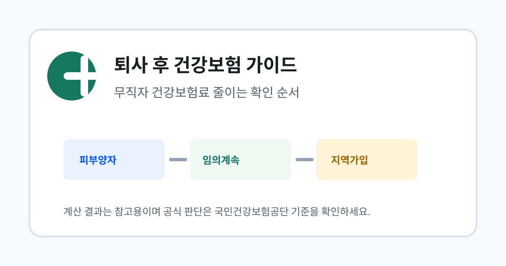

퇴사 후 건강보험 가이드
무직자 건강보험료 줄이는 확인 순서
무직 상태에서 건강보험료 부담을 줄이기 위해 어떤 선택지를 먼저 봐야 하는지 안내합니다.

- 피부양자 등록 가능성이 있다면 가장 먼저 확인합니다.
- 퇴사 전 보험료가 낮았다면 임의계속가입이 유리할 수 있습니다.
- 소득이 없어도 재산과 전월세 자료가 영향을 줄 수 있습니다.
정보 이용 전 확인하세요
이 글은 퇴사자가 건강보험 선택지를 이해할 수 있도록 국민건강보험공단, 보건복지부, 공공데이터포털의 공개 안내를 바탕으로 정리한 민간 참고 자료입니다. 실제 보험료와 자격 판단은 개인별 자료 반영 시점과 공단 심사 결과에 따라 달라질 수 있습니다.
퇴사 직후 무엇부터 확인해야 하는지 모르는 독자를 위해 자격 전환 흐름을 먼저 잡아주는 글입니다.
이 문제가 생기는 이유
퇴사 후에는 직장가입자일 때 적용되던 보험료 기준이 그대로 유지되지 않을 수 있습니다. 직장에서는 보수월액과 회사 부담분이 함께 작동하지만, 퇴사 후에는 가족 피부양자 등록 가능성, 임의계속가입 가능성, 지역가입자 전환 가능성을 순서대로 확인해야 합니다.
무직 상태에서 건강보험료 부담을 줄이기 위해 어떤 선택지를 먼저 봐야 하는지 안내합니다. 이 과정에서 소득, 재산, 전월세, 가족관계 자료가 서로 다른 방식으로 영향을 줄 수 있으므로 한 가지 숫자만 보고 판단하면 실제 고지와 차이가 생길 수 있습니다.
무직 상태라면 보험료를 줄이는 첫 단계는 소득이 없다는 사실을 설명하는 것이 아니라 피부양자 가능성을 확인하는 것입니다. 그다음 임의계속가입과 지역가입자 예상액을 비교해야 불필요한 선택을 줄일 수 있습니다.
해결 방법
- 피부양자 가능성 확인가족 중 직장가입자가 있고 소득 요건을 충족한다면 보험료 부담이 가장 낮아질 수 있습니다.
- 임의계속가입 비교퇴사 전 건강보험료 기준으로 지역가입자 예상액보다 낮은지 확인합니다.
- 지역가입자 자료 정리소득금액, 재산세 과세표준, 전월세 자료를 준비해 예상액을 계산합니다.
- 공단 최종 확인실제 고지 금액과 자격 판단은 국민건강보험공단의 최신 기준과 심사 결과를 따릅니다.
예시로 보는 판단 흐름
급여명세서에서 본인 부담 건강보험료를 확인합니다.
피부양자, 임의계속가입, 지역가입자를 비교합니다.
예를 들어 퇴사 전 본인 부담 보험료가 월 12만원이고, 퇴사 후 소득은 없지만 전월세 보증금이 있다면 피부양자 등록 가능성을 먼저 보고, 어렵다면 임의계속가입 예상액과 지역가입자 예상액을 나란히 비교하는 순서가 안전합니다.
소득이 0원이라도 주택, 토지, 전월세 보증금 자료가 있으면 지역보험료가 나올 수 있습니다. 그래서 무직이라는 표현보다 공단이 확인하는 자료 목록을 기준으로 정리하는 것이 상담에 더 도움이 됩니다.
확인 전에 준비할 자료
건강보험료는 같은 퇴사자라도 소득 종류, 재산 과세표준, 가족관계, 전월세 계약 상태에 따라 결과가 달라질 수 있습니다. 따라서 상담이나 신청 전에 자료를 한 번에 정리해 두면 공단 문의 과정에서 같은 설명을 반복하지 않아도 되고, 계산 결과와 실제 고지 금액의 차이도 더 쉽게 이해할 수 있습니다.
가장 먼저 급여명세서에서 퇴사 전 건강보험료 본인부담액을 확인하세요. 이어서 소득금액증명, 금융소득 자료, 재산세 과세표준, 임대차계약서, 가족관계증명서처럼 자격 판단에 연결될 수 있는 자료를 분리해 두는 편이 좋습니다. 특히 사업소득이나 금융소득은 피부양자 판단과 지역보험료 산정에 모두 영향을 줄 수 있어 금액과 발생 시점을 함께 확인해야 합니다.
- 퇴사일과 마지막 근무월
- 급여명세서의 건강보험료 본인부담액
- 가족 중 직장가입자 존재 여부
- 퇴사 후 예정 소득
계산 결과를 볼 때 주의할 점
계산기는 퇴사 후 선택지를 빠르게 좁히기 위한 참고 도구입니다. 실제 보험료는 국민건강보험공단이 보유한 소득·재산 자료, 세대 구성, 자격 취득일, 감면 여부, 자료 반영 시점에 따라 달라질 수 있습니다. 따라서 계산 결과가 낮게 나오더라도 바로 확정 금액으로 보지 말고, 어떤 입력값 때문에 결과가 달라졌는지 먼저 확인하는 것이 좋습니다.
또한 임의계속가입은 신청 가능 기간과 직장가입 유지 기간 요건이 있고, 피부양자 등록은 가족관계뿐 아니라 소득과 재산 기준을 함께 봅니다. 지역가입자로 전환되는 경우에는 소득이 없더라도 재산이나 전월세 자료가 반영될 수 있으므로, 한 가지 항목만 보고 판단하기보다 세 가지 경로를 순서대로 비교하는 방식이 안전합니다.
퇴사일, 자격상실 신고일, 공단 자료 반영일이 서로 다를 수 있어 고지서가 뒤늦게 도착하거나 금액이 조정될 수 있습니다.
건보계산기 독자 체크
무직자 건강보험료 줄이는 확인 순서를 볼 때 숫자보다 먼저 볼 3가지
판단축을 하나로 고정하지 않기
퇴사일, 자격상실 신고일, 첫 고지일이 서로 어긋나는지 확인합니다.
계산값과 고지액이 달라지는 이유 표시
계산기는 방향을 좁히는 도구입니다. 실제 금액은 자료 반영 시점, 세대 구성, 감면, 정산 여부에 따라 달라질 수 있습니다.
공단 문의 문장으로 바꾸기
“얼마인가요?”보다 “어떤 소득·재산 자료가 반영됐나요?”와 “신청 기한이 언제까지인가요?”를 함께 확인합니다.
고지서가 늦게 오면 선택 기한까지 늦어졌다고 착각하기 쉽습니다.
계산기로 연결하기
아래 계산기에 퇴사 전 보험료와 퇴사 후 소득·재산 자료를 입력하면 세 가지 선택지를 한 화면에서 비교할 수 있습니다.
퇴사 후 건강보험료 계산하기자주 묻는 질문
계산 결과가 실제 고지 금액과 같나요?
아닙니다. 계산기는 참고용이며 실제 고지는 국민건강보험공단 자료 반영 시점과 자격 심사 결과에 따라 달라질 수 있습니다.
퇴사 전에 미리 계산해도 되나요?
가능합니다. 퇴사 예정일, 급여명세서, 소득·재산 자료를 기준으로 미리 비교하면 선택지를 좁히는 데 도움이 됩니다.
무직자 건강보험료 줄이는 확인 순서에서 가장 먼저 확인할 것은 무엇인가요?
무직 상태라면 보험료를 줄이는 첫 단계는 소득이 없다는 사실을 설명하는 것이 아니라 피부양자 가능성을 확인하는 것입니다. 그다음 임의계속가입과 지역가입자 예상액을 비교해야 불필요한 선택을 줄일 수 있습니다.
공식 확인 경로
아래 자료를 기준으로 글의 계산 기준과 주의 문구를 검토했습니다. 개인별 금액과 자격 판정은 국민건강보험공단의 최신 자료 반영과 심사 결과가 우선합니다.
- 보건복지부: 2026년 건강보험료율 7.19% 결정2026년 건강보험료율과 직장·지역가입자 평균 보험료 변동을 확인할 때 봅니다.
- 보건복지부: 2026년도 장기요양보험료율장기요양보험료를 건강보험료에 곱하는 방식과 13.14% 기준을 확인할 때 봅니다.
- 국민건강보험공단: 4대 보험료 모의계산개인별 입력값으로 공단 모의계산 결과를 다시 대조할 때 사용합니다.
- 찾기쉬운 생활법령정보: 실업자의 직장가입자 자격 유지퇴직 후 임의계속가입 신청, 보험료 부담 방식, 탈퇴 안내를 확인할 때 봅니다.
- 건보계산기 공공데이터 출처사이트에서 활용하는 공공데이터와 공식 자료 목록을 모아 둔 페이지입니다.
작성: 건보계산기 편집팀 · 최종 검토: 2026-06-24